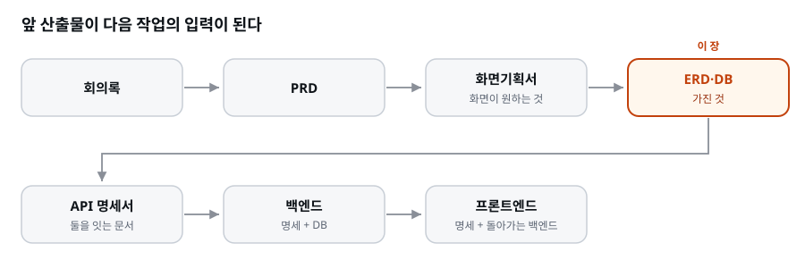
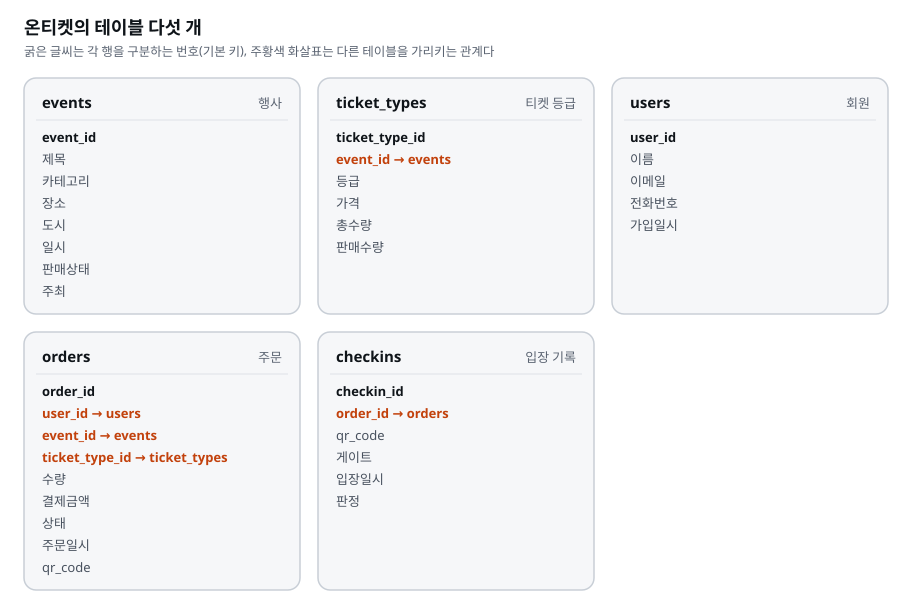
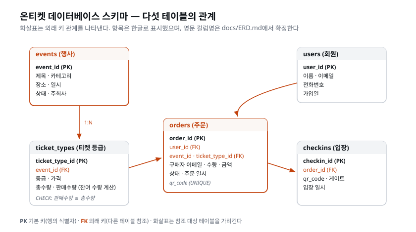

이 장을 마치면 DBA 스킬(
/dba)을 추가하고,docs/ERD.md에 온티켓의 테이블·컬럼·관계·제약·상태값을 확정할 수 있다. Supabase의 PostgreSQL 데이터베이스에 그 설계대로 테이블을 만들고 CSV 데이터를 넣는다. 데이터를 파괴하는 명령을 실행 전에 차단하는 첫 번째 Hook도 설치한다. 완성한 ERD는 다음 장에서 API 명세서를 작성하는 기준으로 활용한다.
회사에는 DBA(Database Administrator)라는 직군이 따로 있다. 개발자가 있는데 왜 데이터베이스만 따로 지키는 사람을 두나. 자산의 성격이 다르기 때문이다.
'DBA'를 풀면 데이터베이스 관리자다. 이름은 '관리자'지만 실제로 하는 일의 절반은 지키는 일이다. 데이터가 새지 않게, 망가지지 않게, 실수로 지워지지 않게, 필요할 때 빠르게 찾을 수 있게 — 이 네 가지가 DBA의 하루다. 규모가 큰 회사일수록 DBA를 개발팀과 별도로 두는데, 그 이유는 단순하다. 만드는 사람과 지키는 사람의 이해가 가끔 충돌하기 때문이다. 개발자는 "빠르게 바꾸고 싶다", DBA는 "함부로 바꾸면 안 된다". 이 긴장이 건강한 회사에서는 안전장치가 된다. 온티켓에서도 AI에게 데이터 설계와 보호 절차를 맡기고, 사람인 여러분은 무엇을 지킬지 결정한다.
코드가 날아가면? 뼈아프지만 다시 짤 수 있다. 우리는 AI 시대에 살고 있고, 심지어 다시 짜는 것도 빠르다. 그런데 주문 데이터가 날아가면? 누가 무엇을 샀는지, 환불했는지, 입장했는지 — 세상 어디에도 복구할 원본이 없다. 골목 라이브의 입금 대조 지옥을 떠올려 보라. 그 어려움의 원인이 바로 "믿을 수 있는 데이터가 없다"는 것이었다.
이 비대칭을 조금 더 파고들면 DBA의 존재 이유가 또렷해진다. 코드는 재생산이 가능한 자산이다. 설계 의도가 사람 머릿속이나 문서에 남아 있으면, 같은 코드를 다시 만들 수 있다. 요즘은 AI가 있으니 더 빠르다. 반면 데이터는 한 번뿐인 사건의 기록이다. "김민준이 3월 14일 저녁 8시에 리버사이드 재즈 VIP석 2장을 88,000원에 결제했다"는 사실은 그 순간 딱 한 번 일어났다. 이 기록이 사라지면 세상 어디에도 원본이 없다. 다시 만들 수 없는 게 아니라, 다시 만들면 그건 위조다. 코드의 손실은 재작업이지만 데이터의 손실은 소실이다. 이 차이가 DBA라는 직군을 만들었다.
돈이 걸리면 소실은 곧바로 분쟁이 된다. 온티켓으로 옮겨 보자. 어떤 고객이 "나 환불받았는데 왜 카드값이 그대로냐"고 항의하는데 우리 DB에 그 환불 기록이 없다면, 우리는 아무것도 증명할 수 없다. 반대로 고객이 "결제한 적 없다"고 주장하는데 우리에게 결제·입장 기록이 남아 있으면, 우리는 사실을 말할 수 있다. 데이터는 곧 회사가 사실을 말할 수 있는 근거다. 골목 라이브 때 오대표가 겪은 어려움 — 통장 입금 내역과 예매 명단을 손으로 대조하며 누가 진짜 냈는지 가려내던 그 밤 — 이 정확히 "믿을 수 있는 데이터가 없어서" 벌어진 일이었다.
그래서 DBA 역할의 제1원칙은 명확하다.
파괴적 명령은 부탁으로 막지 않는다.
"DROP은 조심해 줘"라고 CLAUDE.md에 적는 것은 부탁이다. AI는 대체로 따르지만, 대체로는 데이터 앞에서 충분하지 않다. 이 장에서 우리는 부탁 대신 구조 — 파괴 명령이 실행되기 전에 기계적으로 차단되는 Hook — 를 설치한다.
'부탁'과 '구조'의 차이를 조금 더 벌려 보자. 부탁은 지키는 쪽의 선의에 의존한다. AI에게 "조심해 줘"라고 적어 두면 AI는 그 문장을 읽고 대체로 조심한다. 하지만 '대체로'라는 말이 문제다. 프롬프트가 길어지면 그 지시가 문맥에 묻힐 수 있고, 사용자가 급하게 "빨리 테이블 좀 갈아엎어"라고 밀어붙이면 따라갈 수도 있다. 부탁은 100번 중 99번 지켜져도 나머지 1번에 데이터가 사라진다. 반면 구조는 지키는 쪽의 상태와 무관하게 작동한다. Hook은 AI가 기분이 어떻든, 프롬프트가 얼마나 길든, 사용자가 얼마나 급하든 상관하지 않는다. 특정 명령이 들어오면 기계적으로 막는다. 안전공학에서는 이것을 사람의 주의력에 기대지 않고 물리적으로 막는 장치, 즉 인터록(interlock) 이라 부른다. 전자레인지 문을 열면 마이크로파가 꺼지는 것은 "문 열 땐 끄세요"라는 부탁이 아니라, 문이 열리면 전원이 끊기게 만든 구조다. 우리가 이 장에서 다는 것이 바로 데이터베이스용 인터록이다.
한 가지 오해를 미리 풀자. 구조로 막는다고 해서 AI를 못 믿는다는 뜻은 아니다. AI는 유능한 동료다. 하지만 유능한 동료에게도 우리는 안전장치를 준다. 숙련된 목수도 원형 톱에 안전 가드를 달고, 베테랑 조종사도 체크리스트를 읽는다. 안전장치는 실력에 대한 불신이 아니라 실수의 대가가 큰 일에 대한 예의다. 데이터가 딱 그런 일이다.
[짚고 가기] 이 절의 "코드는 재작업, 데이터는 소실" 대비가 이 장 전체의 뿌리다. 개발자가 아니어도 이 원리는 즉시 와닿는다 — 친 코드는 다시 칠 수 있지만, 지운 사진은 못 되살린다는 비유를 떠올리면 분명해진다. 앞서 나온 골목 라이브 입금 대조 이야기를 여기에 겹쳐 보면, 지금까지 쌓아 온 세계관이 이 장의 동기와 자연스럽게 이어진다. 실수로 지워 본 가장 아까운 파일이 무엇이었는지 한번 떠올려 보면, 데이터 소실의 무게가 한층 실감 난다.
지금 우리 손에 있는 것을 세어 보자. 범위가 확정된 docs/PRD.md, 화면마다 무엇을
보여 줄지 적은 docs/화면기획서.md, design/의 시안, 분리형 구조를 정한 아키텍처
결정 기록, 그리고 /health 하나만 대답하는 web/·api/ 빈 골격. 여기서 곧바로
API 명세서를 쓰거나 서버 코드를 짜고 싶어진다. 그런데 이 장은 그 둘보다 데이터
설계를 먼저 한다. 이유는 네 가지다.
첫째, 화면이 요구하는 값이 곧 DB가 가져야 할 것이다. 글은 두루뭉술해도 넘어가지만, 화면은 빈칸을 용납하지 않는다. 화면기획서의 공연 상세 화면에 '장소', '시작 일시', '등급별 가격', '잔여 수량'이 적혀 있다면, 그 값은 어딘가에 저장돼 있거나 저장된 값에서 계산돼 나와야 한다. 화면을 건너뛰고 데이터부터 설계하면 무엇을 보여 줄지 모르는 채로 테이블을 만들게 되고, 나중에 "이 값도 필요하네" 하며 데이터를 몇 번씩 뜯어고친다. 우리는 화면기획서를 이미 가졌으니 그 비용을 치르지 않아도 된다.
단, 화면만 보고 데이터를 짜지는 않는다. 핵심 엔티티 — 행사·티켓 등급·회원· 주문·입장 — 는 화면이 아니라 도메인(이 사업이 다루는 세계)에서 먼저 나온다. 공연을 파는 일을 한다면 화면을 어떻게 그리든 이 다섯은 있다. 화면기획서는 그 다섯 개의 표에 어떤 필드와 어떤 상태값이 필요한지를 채워 주는 자료다. 그리고 DB는 화면보다 오래 산다. 화면은 다시 그리면 되지만, 날아간 주문 데이터는 복구할 원본이 없다. 그래서 화면에 끌려다니지 않고, 도메인의 뼈대 위에 화면의 요구를 얹는다.
둘째, 테이블과 컬럼이 없으면 명세의 필드 이름을 지어낼 수밖에 없다. API
명세는 "이 주소로 이렇게 물으면 이런 모양의 답을 준다"는 약속이고, 그 답에는
제목·가격 같은 값마다 필드 이름이 적힌다. 그 이름의 출처가 없으면 AI는 그럴듯한
이름을 지어낸다. 그리고 지어낸 이름은 나중에 DB와 어긋난다. 온티켓에서 실제로
벌어질 수 있는 일을 보자. PRD만 보고 명세를 쓰게 하면, AI는 주문 요청에
구매자 이메일 필드를 적는다 — 로그인이 없으니 이메일로
주문을 받는 게 자연스럽기 때문이다. 한편 CSV만 보고 DB를 만들게 하면, orders
테이블은 주문자를 user_id(회원 번호)로만 가리킨다 — 받은 데이터가 그렇게 생겼기
때문이다. 두 문서는 각자 그럴듯한데, 나란히 놓으면 명세가 보내라는 이메일을
담을 컬럼이 DB에 없다. 이 어긋남은 서버 코드를 짜다가, 혹은 더 늦게 화면을
붙이다가 드러나고, 그때 고치는 비용은 지금의 몇 배다. 명세에만 있고 DB에 없는
값이 있다면 어느 한쪽이 거짓말을 하고 있는 것이다. 그래서 '가진 것'을 먼저
확정한다.
셋째, 서버 코드가 동작하려면 연결할 DB가 있어야 한다. 주문을 받는 코드를 짜려면 그 주문을 저장할 테이블이, 공연 목록을 돌려주는 코드를 짜려면 공연이 담긴 테이블과 데이터가 먼저 있어야 한다. 먼저 땅을 다지고, 그 위에 집을 짓는다. DB 없이 서버부터 짜면 코드 안에 가짜 데이터를 적어 두고 시작하게 되는데, 그 가짜는 언젠가 걷어 내야 하는 일거리로 남는다.
넷째, 이 장의 산출물이 다음 작업의 입력이 된다. 이 교재의 작업은 앞 산출물을 다음 작업에 넘기는 사슬로 이어진다.

화면기획서는 "화면이 무엇을 원하는가", 이 장에서 쓸 docs/ERD.md는 "DB가 무엇을
가졌는가"다. 둘은 서로 마주 보는 양 끝이고, 다음에 쓸 API 명세서가 그 둘을 잇는다.
한 가지는 짚어 두자. 실제 프로젝트에서는 화면기획과 데이터 설계를 번갈아 검토하며 수정한다. 화면을 그리다 테이블을 고치고, 테이블을 설계하다 화면을 고친다. 여기서는 배우기 쉽도록 화면기획 다음에 데이터 설계를 배치했다. 그래서 이 장에서도 ERD를 검토하다가 화면기획서의 빈 곳이 보이면, 돌아가 화면기획서를 고치는 것이 맞다.
[짚고 가기] 구매자 이메일과
user_id의 어긋남은 꾸며 낸 예가 아니다. 입력이 다른 두 문서를 AI에게 따로 시키면 거의 반드시 이런 틈이 생긴다. AI가 틀린 것이 아니라 각 지시에 주어진 자료 안에서는 둘 다 옳았다는 점을 짚어 두면 좋다. 어긋남을 막는 것은 AI의 주의력이 아니라 작업의 순서와 입력 파일의 지목이다.
이 장에서 처음 만나거나, 이름만 듣던 용어들을 여기서 정확히 잡고 간다. 데이터베이스가 처음이라면 이 절이 가장 낯설 수 있는데, 완벽히 외울 필요는 없다. "이런 게 있구나" 정도로 눈에 익혀 두면 실습하며 손에 붙는다.
데이터베이스(DB) 는 데이터를 안전하게 저장하고 빠르게 찾게 해 주는 전문 프로그램이다. 그중 관계형 데이터베이스(RDB) 는 데이터를 엑셀 시트와 비슷한 표(테이블) 로 관리한다 — 다만 표들끼리 관계로 연결된다는 점이 다르다. 주문 표의 한 줄은 회원 표의 누군가와, 이벤트 표의 어느 공연과 연결된다.
"그냥 엑셀로 하면 안 되나?"라는 질문이 자연스럽게 나온다. 엑셀도 표지만, 데이터베이스가 다른 점이 세 가지다. 첫째, 동시에 여러 명이 안전하게 쓸 수 있다 — 두 고객이 같은 순간에 마지막 한 장을 예매해도 뒤엉키지 않는다. 둘째, 규칙을 강제할 수 있다 — "판매수량이 총수량을 넘으면 저장을 거부"처럼. 셋째, 수백만 줄에서도 원하는 한 줄을 순식간에 찾는다 — 색인(index)이라는 장치 덕분이다. 엑셀은 사람이 눈으로 보는 도구, 데이터베이스는 프로그램이 안전하고 빠르게 다루는 도구다. 온티켓처럼 돈과 재고가 걸린 서비스에는 데이터베이스가 필요한 이유가 여기 있다.
'관계형'이라는 이름의 유래도 짚어 두면 기억에 남는다. 1970년, IBM의 연구원 에드거 커드(Edgar F. Codd)가 데이터를 표(수학에서는 '관계, relation'라고 부른다)로 다루자는 이론을 제안했다. 여기서 '관계형'이 나왔다. 핵심은 데이터를 여러 표에 나눠 담되, 표들이 공통 열(키)로 서로를 가리키게 하는 것이다. 행사 정보는 행사 표에 한 번만 적고, 주문 표는 "어느 행사인지"를 제목 대신 행사의 번호(event_id)로 가리킨다. 그러면 공연 장소가 바뀌어도 행사 표 한 줄만 고치면 되고, 주문 표 300줄은 손댈 필요가 없다. 같은 정보를 여기저기 중복해 적지 않는 것 — 이것이 관계형의 핵심 아이디어이자, 데이터가 서로 어긋나지 않게 하는 비결이다.
PostgreSQL(포스트그레스) 은 세계에서 가장 널리 쓰이는 오픈소스 RDB 중 하나다. 무료이면서 대기업 수준의 기능을 갖췄고, 우리는 이것을 Supabase를 통해 관리형으로 쓴다.
PostgreSQL을 조금 더 소개하면 이렇다. 1986년 버클리 대학의 연구 프로젝트에서 출발해 30년 넘게 다듬어진, 검증에 검증을 거친 데이터베이스다. 이름은 'Post-Ingres', 즉 이전의 Ingres라는 DB를 잇는다는 뜻에서 왔다(그래서 발음이 '포스트-그레-에스큐엘'로 길다 — 다들 줄여서 '포스트그레스'라 부른다). 은행, 항공사, 대형 이커머스가 실제 운영에 쓸 만큼 견고하면서도 오픈소스라 무료다. 비슷한 제품으로 MySQL, 상용으로는 Oracle, SQL Server 등이 있는데, PostgreSQL은 표준을 성실히 따르고 기능이 풍부해 신규 프로젝트가 특히 선호한다. 우리가 직접 이 무거운 프로그램을 설치·운영하는 대신 Supabase에 맡기는 이유는 곧 아래 '관련 서비스' 절에서 설명한다.
| 용어 | 한 줄 정의 | 온티켓에서 |
|---|---|---|
| 데이터베이스(DB) | 데이터를 안전·빠르게 저장·검색하는 전문 프로그램 | 주문·회원·입장 기록의 집 |
| 관계형(RDB) | 데이터를 표로 담되 표끼리 관계로 연결하는 방식 | 주문이 회원·티켓등급을 가리킨다 |
| PostgreSQL | 가장 널리 쓰이는 오픈소스 관계형 DB | 우리 DB의 실제 엔진 |
| SQL | DB에게 명령하는 질의 언어 | ORM이 대신 써 준다(아래) |
스키마는 어떤 테이블들이 있고, 각 테이블에 어떤 열(컬럼)이 어떤 타입으로 있는지, 무슨 규칙을 지켜야 하는지의 설계도다. 온티켓의 스키마는 운영팀이 넘겨준 CSV 다섯 개의 구조에서 출발한다.
'스키마(schema)'는 그리스어로 '형태·윤곽'을 뜻하는 말에서 왔다. 건축으로 비유하면 도면이다. 집을 짓기 전에 방이 몇 개인지, 각 방의 크기와 용도가 무엇인지, 문은 어디에 다는지를 도면에 그리듯, 데이터를 담기 전에 표가 몇 개이고 각 표에 어떤 열이 어떤 타입으로 있는지를 스키마에 적는다. 도면 없이 집을 지으면 방이 어긋나듯, 스키마 없이 데이터를 쌓으면 어떤 줄은 이메일이 있고 어떤 줄은 없는 뒤죽박죽이 된다. 스키마는 "이 표에 들어올 자격이 있는 데이터의 모양"을 미리 못 박는 일이다.

(읽기 쉽게 CSV의 한글 컬럼명으로 적었다. 실제 DB의 테이블과 컬럼 이름은 DBA가
docs/ERD.md에서 정한다.)

→ 표시가 관계다. "주문의 ticket_type_id는 반드시 실제 존재하는 티켓
등급이어야 한다" — 이런 연결 규칙을 DB가 강제한다.
이 다섯 개의 표가 어떻게 맞물리는지 한 문장으로 읽어 보면 온티켓 전체가 보인다.
하나의 행사(events)에는 여러 티켓 등급(ticket_types)이 있고, 회원(users)이
어떤 티켓 등급을 주문(orders)하면, 그 주문으로 공연장에 입장(checkins)한다.
화살표는 늘 "가리키는 쪽 → 가리켜지는 쪽"으로 읽는다. 예를 들어
orders.ticket_type_id → ticket_types는 "주문은 어느 티켓 등급을 샀는지
가리킨다"로 읽는다. 이 화살표 하나하나가 나중에 아래 '외래 키(FK)'라는
제약으로 DB에 걸린다. 즉 스키마 그림의 →는 장식이 아니라 DB가 실제로
강제하는 규칙이다.
위 그림처럼 어떤 표(엔티티)가 있고, 표끼리 어떻게 이어지는지를 나타낸 것을 ERD(Entity-Relationship Diagram, 개체-관계 다이어그램) 라고 부른다. 세 가지를 담는다.
1:N 표시가 이것이다.결제대기·결제완료·실패·
입장완료·취소·환불처럼 정해진 목록 중 하나다. 이 목록이 상태값이다.스키마와 ERD는 같은 것을 다른 단계에서 부르는 이름에 가깝다. ERD는 사람이
읽고 결정하는 설계 문서, 스키마는 그 결정을 DB가 알아듣게 옮긴 것이다. 이
장에서는 ERD를 그림이 아니라 표와 글로 된 마크다운 문서(docs/ERD.md)로 쓴다.
AI가 읽고 쓸 수 있고, 다음 작업에 그대로 넘길 수 있기 때문이다.
스키마에 제약을 정의하면, DB가 저장 직전에 그 조건을 확인해 마지막 방어선 역할을 한다.
'제약(constraint)'은 말 그대로 '반드시 지켜야 하는 구속'이다. 스키마가 표의 '모양'을 정한다면, 제약은 그 표에 들어올 수 있는 데이터의 '자격 조건'을 정한다. 제약을 어기는 데이터는 저장 자체가 거부된다. 여기서 핵심은 누가 거부하느냐 다. 서버 코드가 아니라 데이터베이스 자신이 거부한다. 코드는 개발자가 실수로 검사를 빠뜨릴 수 있지만, DB에 건 제약은 어떤 경로로 데이터가 들어오든 빠짐없이 적용된다. 그래서 '마지막 방어선'이다.
| 제약 | 뜻 | 온티켓 예 |
|---|---|---|
| NOT NULL | 빈 값 금지 | 주문에 구매자 이메일이 없으면 저장 거부 |
| UNIQUE | 중복 금지 | 같은 QR 코드 두 번 발급 불가 |
| CHECK | 조건식 강제 | 판매수량 ≤ 총수량 (초과 판매를 DB가 거부) |
| 외래 키(FK) | 관계 강제 | 없는 이벤트에 대한 주문 저장 불가 |
각 제약을 온티켓 상황으로 한 번씩 더 풀어 보자.
판매수량 ≤ 총수량을 CHECK로 걸면, 총 100장짜리
공연에 101번째 판매를 기록하려는 순간 DB가 저장을 거부한다.→ 화살표가 바로 이것이다. 없는 티켓 등급을 가리키는 주문,
없는 주문을 가리키는 입장 기록은 저장되지 않는다. 데이터끼리 앞뒤가 맞도록
DB가 붙들어 준다.CHECK 제약을 눈여겨보자. 초과 판매는 나중에 서버 코드가 주문을 받을 때도 검사하겠지만, 그 전에 DB에 먼저 걸어 둔다. 코드는 바뀌어도 이 제약은 남는다. 코드에 버그가 나도 DB가 마지막에 막는다 — 방어선은 겹칠수록 좋고, 돈과 재고에는 특히 그렇다.
이 '겹치는 방어선'을 안전공학에서는 다층 방어(defense in depth) 라고 부른다. 스위스 치즈 여러 장을 겹쳐 놓는 비유가 유명하다 — 치즈 한 장에는 구멍(허점)이 있지만, 여러 장을 겹치면 구멍이 일직선으로 뚫릴 확률이 급격히 낮아진다. 온티켓의 초과 판매 방어도 이렇게 두 겹으로 짠다. 한 겹은 뒤에 만들 서버 코드로, 101번째 주문 요청이 오면 "재고 부족"이라고 거절한다. 다른 한 겹이 이 장에서 먼저 놓는 DB의 CHECK 제약으로, 설령 코드에 버그가 생겨 검사를 통과해 버려도 DB가 저장 직전에 막는다. 코드가 뚫려도 DB가 막는다. 돈과 재고처럼 틀리면 곧바로 손해와 분쟁이 되는 값일수록, 이렇게 코드와 DB에 같은 규칙을 두 번 거는 것이 정석이다. 골목 라이브의 초과 판매는 이 둘째 방어선이 없어서 벌어진 사고였다고 볼 수 있다.
[짚고 가기] 제약 네 가지 중 CHECK는 특히 눈여겨볼 만하다. "어차피 코드에서 막을 텐데 DB에 또 거냐"고 의아할 수 있는데, 코드는 개발자가 실수로 빼먹을 수 있지만 DB 제약은 절대 안 빠진다는 것이 핵심이다. 온티켓의 초과 판매(골목 라이브) 이야기와 붙여 보면 왜 이중으로 막는지 금방 납득된다. 반대로 "그럼 제약을 왜 다 DB에만 안 걸고 코드에도 거냐"는 의문도 자연스러운데 — 코드 검사는 고객에게 친절한 안내("남은 수량이 부족합니다")를 빨리 주기 위함이고, DB 제약은 그 코드가 뚫렸을 때의 최후 보루다. 이렇게 나눠 보면 둘의 역할이 분명해진다. 이 장에서는 순서상 DB 쪽 겹을 먼저 놓는다.
마이그레이션은 스키마의 변경을 순서 있는 파일들로 기록·적용하는 방식이다. "테이블 5개 생성"이 파일 하나, 나중에 "orders에 메모 컬럼 추가"가 또 파일 하나. 왜 이렇게 하나 —
'마이그레이션(migration)'은 원래 '이주·이동'을 뜻한다. 철새가 계절 따라
서식지를 옮기는 것도 migration이다. 데이터베이스에서는 스키마를 한 상태에서
다음 상태로 옮기는 변경 한 건을 가리킨다. 중요한 것은 이 변경들이
번호가 매겨진 순서 있는 파일로 남는다는 점이다. 0001_초기_5개_테이블,
0002_orders에_메모_컬럼처럼. 이 파일들은 한 번 만들면 고치지 않고 계속 쌓아
간다. 스키마를 바꾸고 싶으면 기존 파일을 수정하는 게 아니라 새 번호의 파일을
추가한다.
이렇게 하는 이유를 온티켓 팀 상황으로 그려 보자. 여러분의 노트북, 옆자리 동료의 노트북, 그리고 실제 서비스가 도는 운영 서버 — 세 곳에 각각 DB가 있다. 마이그레이션 파일이 없다면, 여러분이 손으로 "orders에 메모 컬럼 추가"를 했을 때 동료와 운영 서버에도 똑같이 손으로 해 줘야 하고, 하나라도 빠뜨리면 세 DB의 모양이 어긋난다. 마이그레이션이 있으면, 새 파일 하나를 공유하고 각자 "미적용분 실행"만 하면 세 DB가 같은 순서의 같은 변경을 거쳐 정확히 같은 상태가 된다. 무엇이 언제 왜 바뀌었는지도 파일 목록에 그대로 남는다.
코드에 Git이 있다면 DB에는 마이그레이션이 있다 — 같은 필요, 같은 답이다.
이 비유가 정확하다. Git이 코드의 변경을 커밋 단위로 순서대로 쌓아 두듯, 마이그레이션은 스키마의 변경을 파일 단위로 순서대로 쌓아 둔다. Git 없이 코드를 관리하면 "어제 누가 뭘 고쳤는지"를 알 수 없듯, 마이그레이션 없이 DB를 관리하면 "누가 언제 이 컬럼을 왜 추가했는지"를 알 수 없다. 둘 다 변경의 역사를 남긴다는 같은 목적을 가진다. 그래서 마이그레이션 파일도 Git에 함께 커밋해서, 코드와 스키마의 역사를 한곳에서 관리한다.
빈 테이블에 시작 데이터를 넣는 작업이다. 우리는 운영팀에게 받은 CSV (행사 12건, 등급 26건, 회원 50명, 주문 300건, 입장 15건)를 시드로 붓는다.
'시드(seed)'는 '씨앗'이다. 빈 밭(빈 테이블)에 씨앗(초기 데이터)을 뿌려 처음 작물이 자라게 하는 것에서 온 말이다. 마이그레이션이 밭의 구조(이랑과 고랑) 를 만든다면, 시드는 그 밭에 처음 심는 씨앗이다. 둘은 역할이 다르다 — 마이그레이션은 표의 모양을, 시드는 표의 내용을 다룬다. 개발 단계에서 시드가 중요한 이유는, 텅 빈 테이블로는 그 위에 짓는 것들이 제대로 도는지 확인할 수 없기 때문이다. 뒤에 만들 서버가 공연 목록을 돌려주려면 공연 12건이, 마이티켓을 조회하려면 주문 300건이 DB에 먼저 있어야 한다. 그래서 우리는 운영팀이 넘겨준 실제에 가까운 표본 데이터(CSV 5종)를 시드로 붓는다.
'CSV'도 짚어 두자. Comma-Separated Values, 즉 쉼표로 값을 구분한 표 파일 이다. 엑셀에서 "다른 이름으로 저장 → CSV"를 하면 나오는, 첫 줄이 열 이름이고 그 아래로 한 줄에 한 데이터가 쉼표로 나뉘어 적힌 단순한 텍스트 파일이다. 가볍고 어떤 프로그램에서든 열려서, 시스템 사이에 표 데이터를 주고받을 때 사실상 표준으로 쓰인다.
DB의 모국어는 SQL이라는 질의 언어다. ORM은 SQL을 직접 쓰는 대신 프로그래밍 언어 코드로 DB를 다루게 해 주는 번역기다. 많은 ORM은 스키마 자체를 코드 파일로 정의한다 — 스키마가 코드가 되면 Git으로 관리되고, 마이그레이션 파일도 그 코드에서 자동 생성된다. 그리고 무엇보다, AI가 스키마를 읽고 쓸 수 있는 텍스트가 된다.
용어를 하나씩 풀자. SQL(Structured Query Language) 은 데이터베이스에게
"이런 데이터를 달라, 이렇게 넣어라"를 지시하는 전용 언어다. SELECT(골라 달라),
INSERT(넣어라)처럼 영어 낱말로 된 명령문을 쓴다. 강력하지만 데이터베이스마다
미묘하게 문법이 다르고, 초심자에게는 또 하나의 언어를 배우는 부담이 된다.
ORM(Object-Relational Mapping) 은 이 부담을 덜어 준다. 이름을 풀면 '객체 (우리가 쓰는 프로그래밍 언어의 데이터)와 관계형 DB의 표를 서로 이어 주는 매핑'이다. ORM을 쓰면 SQL을 직접 쓰는 대신 우리가 이미 아는 프로그래밍 언어의 코드로 DB를 다룰 수 있다. ORM이 그 코드를 알아서 SQL로 번역해 DB에 보낸다. 번역기를 끼고 대화하는 셈이다 — 우리는 익숙한 말로 하고, ORM이 DB의 모국어로 옮겨 준다.
스키마를 코드 파일로 정의하는 방식은 표와 열과 제약을 코드로 적고, 그 코드를 스키마의 기준 자료로 삼는다. 이 방식이 우리에게 세 가지 이득을 준다.
어떤 ORM과 마이그레이션 도구를 쓸지는 DBA가 프로젝트의 언어와 구조를 보고 고른다. 사람이 도구 이름을 정해 줄 필요는 없다.
정리하면 이렇다. AI가 스키마 코드를 쓴다 → 도구가 그 코드에서 마이그레이션 파일을 생성한다 → 마이그레이션을 DB에 적용한다 → 스키마가 실물이 된다. 사람은 이 흐름의 결정과 검토를 맡는다. 아래 프롬프트와 실습이 정확히 이 순서로 간다.
[짚고 가기] 여기서 "그럼 SQL은 안 배워도 되나?" 하는 의문이 들 수 있다. 답은 이 과정에서는 몰라도 되지만, 개념은 알아 두면 좋다는 것이다. ORM이 SQL을 대신 써 주지만, DB가 결국 SQL로 움직인다는 큰 그림을 이해하고 있어야 나중에 문제가 생겼을 때 당황하지 않는다. ORM 제품 이름은 외울 필요 없고, "스키마를 코드로 적으면 AI가 그걸 읽고 고칠 수 있다"는 이점만 기억하면 된다.
앞 장에서 정한 원칙은 "필요한 업무부터 역할을 정의한다" 였다. 지금이 그때다. 데이터를 설계하고 실제 DB에 적용할 일이 생겼으니, AI에게 DBA 업무를 맡길 역할을 만든다. 다른 역할과 같은 틀 — 판단 기준·금지 목록·프로세스·도구 권한의 네 항목 — 으로 정의한다. 여기에 이 역할이 하는 일 한 줄과, 이 역할이 내놓는 산출물의 목차인 "ERD에 담을 것" 을 더한다.
이 항목들을 사람이 다 적어 주지는 않는다. 사람이 말하는 것은 이 역할이 하는 일과 넘지 말아야 할 선뿐이고, 나머지는 AI가 PRD·화면기획서·CSV를 읽고 채운다. 대신 사람은 만들어진 스킬 파일을 읽고 빠진 것을 찾아야 한다. 그러려면 잘 쓴 DBA 정의에 무엇이 들어 있어야 하는지 알아야 한다. 아래 표가 그 기준이다.
| 항목 | 잘 쓴 정의에 들어 있는 것 |
|---|---|
| 하는 일 | 데이터 설계서(docs/ERD.md)를 쓰고, 그 설계대로 스키마·마이그레이션·시드를 만든다 |
| 판단 기준 | 근거 자료는 docs/PRD.md·docs/화면기획서.md·data/의 CSV 셋이다. 설계의 기준 문서는 docs/ERD.md이고, 스키마는 ERD 그대로 따른다. 같은 사실을 두 군데에 저장하지 않는다(다른 값에서 계산되는 값, 다른 테이블에서 찾을 수 있는 값). 결정이 필요한 곳은 지어내지 않고 질문한다 |
| ERD에 담을 것 | 테이블과 관계 / 컬럼·타입·키 / 제약 / 상태값 목록 / 문서 끝에 '질문' 목록과 '결정 기록' |
| 금지 목록 | 파괴적 명령 실행 금지 / 사람의 검토 없는 마이그레이션 적용 금지 / 화면에도 안 쓰이고 도메인에도 없는 테이블·컬럼 지어내기 금지 / ERD를 고치지 않고 스키마만 바꾸기 금지 |
| 프로세스 | 근거 자료 확인 → ERD 작성·갱신 → 사람의 검토 → 스키마·마이그레이션 생성, ERD와 대조한 표 보고 → 사람의 검토 후 적용 → 시드는 넣기 전과 후의 행 수를 대조해 보고(거부된 행이 있으면 어느 행이 왜인지) |
| 도구 권한 | ERD와 스키마·마이그레이션·시드 파일만 수정한다. API와 화면 코드는 건드리지 않는다 |
각 항목에 왜 그 내용이 들어가야 하는지 풀어 둔다. 스킬 파일을 검토할 때 이 설명이
기준이 된다. 그리고 이 항목들이 채워져 있는 만큼, 뒤에서 /dba에게 일을 시키는 말이
짧아진다.
이 항목들을 스킬 파일 하나에 담아 두면 /dba 한마디로 이 규칙과 절차를 적용할 수
있다. DBA를 Subagent가 아니라 Skill로 두는 이유는, 이 역할이 '보는 역할'이 아니라
ERD와 스키마를 만드는 역할이기 때문이다.
[짚고 가기] 금지 목록의 첫 줄과 아래 Hook이 같은 것을 두 번 막는다는 점이 질문거리가 된다. "스킬에 금지라고 적었는데 왜 훅이 또 필요한가?" 스킬의 금지는 AI가 읽고 따르는 문장이고, 훅은 AI가 그 문장을 잊어도 작동하는 장치다. 되돌릴 수 있는 일은 문장으로 충분하고, 되돌릴 수 없는 일에는 장치를 단다.
Supabase는 PostgreSQL을 관리형으로 제공한다. 프로젝트를 만들면 DB가 생기고, 웹 대시보드에서 표를 눈으로 볼 수 있다.
여기서 '관리형(managed)' 이라는 말이 핵심이다. PostgreSQL은 그 자체로는 우리가 직접 서버에 설치하고, 백업을 돌리고, 보안을 챙기고, 고장 나면 밤에 일어나 고쳐야 하는 프로그램이다. 관리형은 서비스 업체가 그 운영을 맡고, 우리는 무료 또는 유료 요금제로 DB를 빌려 쓰는 방식이다. 우리는 데이터를 넣고 빼는 데만 집중하고, 서버 관리·백업·업데이트 같은 뒤치다꺼리는 Supabase가 한다. 3일 만에 서비스를 출시해야 하는 우리에게 이는 큰 도움이 된다 — DB 서버를 세우고 운영하는 데 시간을 쓰지 않아도 되니까.
Supabase(수파베이스)는 "오픈소스 Firebase 대안"을 표방하며 등장한 서비스로, PostgreSQL을 중심에 두고 개발에 필요한 여러 도구를 한데 묶어 제공한다. 우리가 이 장에서 쓰는 것은 그 핵심인 관리형 PostgreSQL이지만, Supabase는 그 위에 인증(로그인), 파일 저장, 실시간 데이터 구독 같은 기능도 함께 준다. 우리는 그중 DB만 골라 쓰는 셈이다.
Supabase를 고른 이유를 세 가지로 정리하면 이렇다.
참고로 비슷한 관리형 PostgreSQL 서비스로는 Neon, Railway, AWS RDS 등이 있다. 이 과정에서 Supabase를 쓰는 것은 위 세 이유 — 표준 DB, 무료 시작, 눈에 보이는 대시보드 — 때문이지, 다른 선택지가 틀려서가 아니다.
onticket, 리전은 가까운 곳(Seoul 또는 Tokyo),
DB 비밀번호를 정하고 꼭 따로 보관. 비밀번호는 영문과 숫자로만 만든다postgresql://postgres.…:[YOUR-PASSWORD]@….pooler.supabase.com:5432/postgres 모양의 긴 주소다[YOUR-PASSWORD] 자리를 2번에서 정한 DB 비밀번호로 바꾼다. 대괄호도 함께 지운다각 단계에 왜 그렇게 하는지 한마디씩 덧붙인다.
/·$·@ 같은 특수문자가 들어가면 연결 문자열을 읽는
프로그램이 비밀번호와 주소의 경계를 잘못 읽어 접속에 실패한다. 처음부터 영문과 숫자로만
만들면 이 문제가 생기지 않는다.이 문자열 하나면 누구든 우리 DB에 접속할 수 있다. 다루는 규칙:
.env 파일에만 넣는다 (DATABASE_URL=postgresql://...).gitignore에 .env가 있는지 확인한다 — 저장소에 올라가는 순간 사고다연결 문자열(connection string) 이 무엇인지 뜯어 보면 왜 이렇게 조심하는지
알 수 있다. postgresql:// 로 시작하는 이 긴 주소 한 줄 안에는 DB의 주소,
포트, 데이터베이스 이름, 그리고 접속할 사용자 이름과 비밀번호가 모두 담겨
있다. 즉 이 한 줄에 "우리 DB가 어디 있고, 어떤 계정으로 접속하는지"가 통째로
들어 있다. 이 문자열 하나로 데이터베이스 전체를 읽고, 고치고, 지울 수 있다.
손에 넣은 사람이 누구든 그렇다 — DB는 문자열이 맞으면 접속을 허용할 뿐, 그 사람이
누구인지는 따지지 않는다. 온티켓의 모든 고객 주문·이메일·결제 기록이 이 한 줄에 달려 있다.
그래서 세 가지 규칙이 나온다. 첫째, .env 파일에만 넣는다. .env는
환경변수(environment variable)를 담는 파일로, 코드 본문과 분리해 비밀 값을
따로 보관하는 실무 표준이다. 둘째, 코드에 직접 붙여넣지 않고, 채팅·메신저로도
보내지 않는다. 코드에 박으면 그 코드를 보는 모두가 키를 갖게 되고, 메신저로
보내면 그 대화 기록에 키가 영원히 남는다. 셋째, .gitignore에 .env가
있는지 확인한다. .gitignore는 "Git이 추적하지 말 파일 목록"이다. 여기에
.env가 없으면, 무심코 커밋하는 순간 연결 문자열이 저장소 이력에 남아
버린다. 저장소가 공개라면 전 세계에 키를 뿌린 것이고, 비공개라도 한 번 올라간
비밀은 역사에서 지우기가 매우 번거롭다. 저장소에 올라가는 순간이 곧 사고다.
[짚고 가기] 비밀 값이 Git에 올라가 사고가 난 사례는 업계에 넘친다 — 클라우드 키가 공개 저장소에 올라가 하룻밤 새 수천만 원이 청구된 이야기는 검색하면 금방 나온다. 이 한 줄이 우리 고객 전체의 개인정보 키라는 무게를 실감하면,
.gitignore확인이라는 사소해 보이는 단계도 소홀히 하지 않게 된다. 실습에서.env가.gitignore에 들어 있는지 AI에게 먼저 확인시키는 것도 이 습관을 몸에 붙이기 위한 장치다.
Supabase 대시보드의 Table Editor를 열어 두자. 지금은 텅 비어 있다. 이 장이 끝날 때 여기에 ERD대로 만든 테이블과 데이터가 보이면 성공이다. (SQL을 몰라도 표를 눈으로 보고 편집할 수 있다는 것 — 관리형 서비스의 장점이다.)
'대시보드(dashboard)'는 자동차 계기판에서 온 말로, 서비스의 상태를 한눈에 보고 조작하는 웹 화면을 가리킨다. Supabase 대시보드에서 우리가 이 장 내내 쓸 곳은 두 군데다. 하나는 방금 말한 Table Editor — 엑셀처럼 표를 눈으로 보고 직접 편집할 수 있는 화면이다. 다른 하나는 SQL Editor — SQL을 직접 쳐서 실행하는 화면인데, 우리는 여기서 SQL을 쓸 일은 거의 없지만, 아래 파괴 방지 훅에서 "진짜로 테이블을 지워야 할 때 사람이 직접 실행하는 곳"으로 이 SQL Editor를 기억해 두면 좋다. AI의 손은 훅으로 묶여 있어도, 사람은 여기서 대시보드를 통해 직접 위험한 작업을 할 수 있다.
Claude Code의 여섯 가지 기능을 훑을 때 이름만 봤던 Hook을, 이 장에서 처음
실제로 단다. 이제부터 AI가 진짜 DB에 연결된 채로 일하기 때문이다. 마이그레이션을
만들고, 시드를 붓고, 쿼리를 실행한다. 그 손이 실수로 DROP TABLE orders(주문 테이블 통째 삭제)를
실행한다면? 부탁("조심해")은 이 위험에 대한 답이 못 된다. 실행 자체가
불가능해야 한다.
무엇이 달라졌는지 짚어 보자. 이 장 전까지 AI의 실수는 대개 되돌릴 수 있었다.
코드를 잘못 고치면 다시 고치면 되고, 파일을 잘못 만들면 지우면 됐다. 퍼미션
요청을 사람이 읽고 승인하는 것으로 대부분의 위험이 걸러졌다. 그런데 이제
상황이 바뀌었다. AI의 손이 되돌릴 수 없는 데이터에 닿게 되었다.
DROP TABLE orders 한 줄이면 300건의 주문이 흔적 없이 사라진다. 여기서는
퍼미션만으로 부족하다 — 사람이 졸린 눈으로 승인 키를 잘못 누르는 순간, 복구할
원본이 없는 데이터가 날아간다. 그래서 퍼미션 위에 한 겹 더, 특정 명령은
사람이 승인하려 해도 아예 실행 경로에 오르지 못하게 막는 장치가 필요하다.
그것이 훅이다.
'DROP TABLE'과 'TRUNCATE'가 무슨 명령인지 알아 두면 왜 이것들을 막는지 분명해 진다. DROP TABLE은 표를 구조째 통째로 삭제한다 — 데이터뿐 아니라 표 자체가 사라진다. DROP DATABASE는 데이터베이스 전체를 지운다. TRUNCATE는 표는 남기되 그 안의 모든 데이터를 순식간에 비운다. 셋 다 "실행 즉시, 되돌리기 불가능"이라는 공통점이 있다. 특히 TRUNCATE는 위험하게도 아주 빠르고 조용히 동작해서, 실수로 치면 눈 깜짝할 새에 표가 텅 빈다. 이 셋이 우리가 훅으로 막을 1차 대상이다.
Hook은 .claude/settings.json에 등록하며, 구조는 세 가지로 읽으면 된다.
'Hook(훅)'은 '갈고리'라는 뜻이다. 프로그램이 흘러가는 도중의 특정 지점에 갈고리를 걸어, 그 순간 내가 지정한 검사나 동작을 끼워 넣는 장치를 말한다. Claude Code에서 훅은 "AI가 도구를 쓰기 직전", "다 쓴 직후" 같은 정해진 시점에 걸 수 있다. 우리가 이 장에서 거는 갈고리는 "AI가 터미널 명령을 실행하기 직전" 이다. 그 순간 갈고리에 걸어 둔 검사 스크립트가 명령을 들여다보고, 위험하면 실행을 막는다.
| 요소 | 뜻 | 우리의 값 |
|---|---|---|
| 언제 | 어느 시점에 끼어드나 | PreToolUse — 도구가 실행되기 직전 |
| 무엇을 | 어느 도구를 감시하나 | Bash — 터미널 명령 실행 |
| 어떻게 | 무슨 검사를 하나 | 명령 문자열에 DROP TABLE·TRUNCATE 등이 있으면 차단 |
세 요소를 하나씩 풀면 이렇다.
DROP TABLE·DROP DATABASE·TRUNCATE 같은
위험 단어가 있는지 살펴본다. 있으면 "차단"을, 없으면 "통과"를 알린다.검사 스크립트가 "차단"을 알리면(약속된 신호를 돌려주면) Claude Code는 그 명령을 실행하지 않고, 차단 사유가 AI에게 전달된다. AI는 사유를 보고 다른 길을 찾는다.
여기서 '약속된 신호'를 조금 더 설명하면, 검사 스크립트는 특정 종료 코드(또는 정해진 형식의 응답)로 "이 명령은 막아라"를 Claude Code에게 알린다. Claude Code는 그 신호를 받으면 명령을 실행하지 않고, 스크립트가 함께 돌려준 차단 사유를 AI에게 전한다. 사유에 "필요하면 사람이 대시보드에서 직접 실행하세요" 같은 안내가 들어 있으면, AI는 그 안내를 따라 다른 방법을 제안하거나 사람에게 넘긴다. 훅은 단순히 막기만 하는 게 아니라, 차단된 이유와 그 작업을 누가 처리해야 하는지 AI에게 알려 주는 셈이다.
훅을 만드는 것 자체는 AI에게 시킨다 — 우리는 구조를 이해하고, 만들어진 설정을 읽어 확인하는 쪽이다.
이 역할 분담이 이 장의 요령이다. 훅 설정 파일과 검사 스크립트를 손으로 짜는 것은 AI가 훨씬 빠르고 정확하다. 사람이 할 일은 두 가지 — 첫째, 무엇을 막을지 결정하고(DB를 지우는 명령), 둘째, AI가 만든 설정과 스크립트를 열어 그 결정대로 걸렸는지 읽는 것이다. 아래 실습에서 훅의 3요소를 설정 파일에서 하나씩 찾아 읽는다.
파괴 방지 훅은 DB에만 쓰는 게 아니다. 같은 패턴이 지키는 것들:
rm -rf 류의 폴더 통삭제 명령 차단 — 프로젝트 폴더 증발 방지git push --force 차단 — 팀 저장소 이력 덮어쓰기 방지각 사례가 실무에서 얼마나 뼈아픈 사고인지 한 번씩 그려 보자. 안전장치의 무게는 그것이 막는 사고의 무게로 재는 법이다.
rm -rf 차단. rm은 파일 삭제 명령, -rf는 "폴더 안까지 재귀적으로,
물어보지 않고 강제로"라는 옵션이다. 경로를 실수로 잘못 쓰면 프로젝트 폴더가
통째로 증발한다. 업계에는 잘못된 rm -rf로 회사 전체 파일을 날린 전설적인
사고담이 여럿 있다. 되돌릴 수 없다는 점에서 DROP TABLE의 파일 버전이다.git push --force 차단. --force는 "원격 저장소의 역사를 내 것으로
덮어써라"는 강제 옵션이다. 팀이 함께 쓰는 저장소에 이걸 잘못 쓰면 동료들이
올린 커밋이 역사에서 사라진다. 코드의 공동 기록이 날아가는 사고라, 팀 작업
환경에서는 흔히 훅으로 막아 둔다.공통점: 되돌릴 수 없는 것 앞에는 문을 단다.
이 한 문장이 훅을 언제 써야 하는지 판단하는 기준이다. 되돌릴 수 있는 일(코드 수정, 파일 생성)은 퍼미션으로 충분하다 — 잘못돼도 되돌리면 된다. 하지만 되돌릴 수 없는 일(데이터 삭제, 역사 덮어쓰기, 운영 반영) 앞에는 퍼미션 위에 훅이라는 문을 하나 더 단다. 문의 개수는 그 뒤에 있는 것의 가치와 복구 불가능성에 비례한다. 온티켓에서 가장 되돌릴 수 없는 것 — 고객의 주문 데이터 — 앞에 우리가 지금 첫 문을 다는 이유다.
[짚고 가기] 이 사례 목록은 훅이 DB만의 이야기가 아니라 개발 전반의 안전 패턴이라는 것을 보여 주는 대목이다. 특히
git push --force와rm -rf는 실무에서 실제로 사고가 잦아 팀들이 흔히 막아 두는 것이라, 나중에 회사에 가면 이런 훅이 이미 걸려 있는 경우가 많다. 퍼미션과 훅의 차이 — 퍼미션은 되돌릴 수 있는 일의 승인, 훅은 되돌릴 수 없는 일의 봉인 — 를 나란히 놓고 보면 두 안전장치가 맡는 일이 정리된다.
이 절의 프롬프트들은 모두 짧다. 짧아도 되는 이유가 이 절의 주제다. 근거 자료가
무엇인지, ERD에 무엇을 담는지, 테이블과 컬럼을 어떻게 나누는지, 빈칸을 만나면
어떻게 하는지, 끝나면 무엇을 보고하는지 — 이런 기준·순서·형식·금지와 설계 자체는
/dba가 맡는다. 그래서 프롬프트에는 사람만 아는 것만 말한다. 이번 일의 범위,
사람이 지금 내리는 결정, 되돌릴 수 없는 일 앞에서 멈출 곳이다.
거꾸로도 읽을 수 있다. 프롬프트에 조건을 길게 적고 있다면, 그 조건이 있어야 할 역할 정의나 문서가 비어 있다는 신호다. 그럴 때는 프롬프트를 늘리지 말고 역할과 문서를 채운다. 그리고 결과가 기대와 다르면 그때 고친다. 아래 네 지시를 순서대로 읽으면, 설계 → 확정 → 안전장치 → 적용 순으로 DB가 서는 과정이 보인다.
/dba 온티켓의 데이터 설계서를 docs/ERD.md로 써줘. 테이블·컬럼·제약은 네가 설계하고 이유를 '결정 기록'에 적어. 질문은 PRD를 바꿔야 하는 것만 남겨.판매수량이 총수량을 넘는 일은 DB가 막아야 해.첫 문장은 산출물과 맡기는 범위다. 테이블을 몇 개로 나눌지, 컬럼 이름을 무엇으로 할지, 어떤 제약을 걸지는 DBA가 정하고, 그 이유를 '결정 기록'에 남긴다. 근거 자료가 PRD·화면기획서·CSV라는 것은 스킬의 판단 기준에 이미 있으니 다시 적지 않는다. "질문은 PRD를 바꿔야 하는 것만"은 질문의 문턱을 정한다. ID를 어떤 모양으로 만들지, 어느 규칙을 DB에 걸고 어느 규칙을 서버 코드에 맡길지 같은 설계 안의 선택은 DBA가 정하고 기록한다. 사람에게 묻는 것은 서비스의 범위가 흔들리는 것뿐이다. 그래야 사람은 질문 목록에 하나하나 답하는 대신, 완성된 설계를 읽고 검토한다.
둘째 문장이 이 프롬프트에 든 유일한 사람의 결정이다. PRD에는 "초과 판매는 안 된다"만 적혀 있다. 그것을 서버 코드의 검사에 맡길지, DB의 제약으로 걸지는 이 장에서 사람이 정한다. 코드는 바뀌어도 제약은 남으므로 DB에 건다 — 이 결정은 어느 문서에도 아직 없으니 말로 해야 한다. 제약을 어떤 문법으로 거는지는 말하지 않는다. 그것은 DBA가 아는 일이다.
그러면 이 프롬프트에 없는 것을 보자. 테이블 이름, 컬럼 이름, 어느 테이블이 어느 테이블을 가리키는지, 무엇이 유일해야 하는지가 없다. 이런 것을 사람이 미리 적어 주려면 설계를 이미 끝낸 사람이어야 한다. 설계를 시키는 말이 설계 결과를 들고 있을 수는 없다. 이런 것은 시키고 나서 결과를 읽어 확인한다. 아래 실습의 ERD 검토 항목이 그 일이다.
| 약한 지시 | 강한 지시 | 무엇이 다른가 |
|---|---|---|
| (스킬 없이) DB 설계해줘 | /dba 데이터 설계서를 docs/ERD.md로 써줘. 이유는 '결정 기록'에 적어 |
근거와 형식은 역할에 두고, 선택의 이유를 문서에 남기게 한다 |
| 애매한 건 적당히 | 질문은 PRD를 바꿔야 하는 것만 남겨 | 설계 안의 선택은 DBA가 정해 기록하고, 범위는 사람이 정한다 |
| 초과 판매 안 나게 잘 | 판매수량이 총수량을 넘는 일은 DB가 막아야 해 | 사람만 아는 결정을 말한다 |
ERD 초안이 나오면 사람이 검토한다. 무엇을 보는지는 아래 실습에 체크리스트로 있다. 검토가 끝나면 한 줄로 확정한다.
/dba ERD 검토 끝났어. 이상 없으니 확정해.검토에서 고칠 것이 나왔다면 "이상 없으니" 자리에 고칠 것을 한 줄씩 구체적으로 적는다.
/dba ERD 검토 끝났어. 주문자는 로그인이 없으니 이메일로 알아보게 바꾸고, 상태를 확정해.
말은 사람 말이면 된다. "NOT NULL" 대신 "필수로", "NULL 허용" 대신 "비어 있어도 되게"라고 하면 된다. DB의 문법으로 옮기고, 그 결정을 '결정 기록'에 적는 것은 DBA의 일이다. ID 형식, 결제 전 주문의 결제수단, 어느 규칙까지 DB가 막을지 같은 세부도 DBA가 이미 정해 결정 기록에 적어 두었다. 사람은 그것을 읽고 동의하거나, 다르게 하고 싶은 것만 한 줄로 고친다.
DB를 지우는 명령은 실행되기 전에 막는 훅을 이 프로젝트에 만들어줘.이 한 줄에 사람의 결정이 둘 들어 있다. 무엇을 막을지(DB를 지우는 명령)와 언제 막을지(실행되기 전에)다. 어떤 명령들을 걸러 낼지, 어느 설정 파일에 등록할지, 막을 때 어떤 사유를 돌려줄지는 적지 않았다. 그것은 Claude Code가 자기 설정을 아는 영역이라 맡기면 된다. 앞에서 배운 훅의 3요소(언제·무엇을·어떻게)는 프롬프트에 적으려고 배운 것이 아니라, AI가 만든 설정 파일을 열어 읽기 위해 배운 것이다. 그 읽는 일은 아래 실습에 있다.
스킬의 금지 목록에도 파괴적 명령이 있는데 훅을 또 다는 이유는 하나다. 스킬의 금지는 AI가 읽고 따르는 부탁이고, 훅은 AI가 그 부탁을 잊어도 작동하는 구조다. 진짜로 테이블을 지워야 하는 날이 오면, 그 결정과 실행은 사람이 대시보드에서 직접 한다. 훅은 AI의 손만 묶는다.
/dba Supabase에 ERD 적용하고 CSV 넣어줘.한 줄에 두 가지 일이 들어 있다. ERD대로 테이블을 만드는 일과, 운영팀이 준 CSV를 그 테이블에 넣는 일이다. 어떤 도구로 스키마와 마이그레이션을 만들지, 파일을 어디에 둘지, 어느 테이블부터 넣을지는 적지 않았다. DBA가 프로젝트를 보고 고른다.
이 프롬프트가 짧아도 되는 것은 두 가지가 역할에 이미 있기 때문이다.
CSV의 각 열을 DB의 어느 항목에 옮길지, 계산값은 빼는지, CSV에 없는 값(예: 옛 주문의 구매자 이메일)을
어디서 채우는지는 확정한 docs/ERD.md와 그 결정 기록이 정해 두었다. ERD를 확정할 때 남긴 결정이
지금 적용의 규칙으로 일한다. 결정을 문서에 남기는 이유가 여기서 드러난다.
[짚고 가기] 이 네 지시는 바로 아래 실습에서 그대로 실행되므로, 여기서는 각 지시의 왜를 이해하는 데 집중하면 좋다. 특히 "적용은 내가 읽어 본 뒤에"는 무심코 지나치기 쉬운 문장인데, 여기에 데이터 작업의 핵심 안전 감각이 담겨 있다. 프롬프트에 보이지 않는 문장도 하나 챙겨 두자.
/dba스킬에서 '결정 기록' 조항을 빼면 무슨 일이 벌어질까 한번 생각해 보면 — AI가 주문자 식별 같은 선택을 조용히 한쪽으로 정해 버리고, 검토하는 사람은 그 이유를 찾을 곳이 없다 — 그 한 줄의 값어치가 뚜렷해진다. 프롬프트가 짧다고 규율이 없는 것이 아니다. 규율이 프롬프트에서 역할 정의로 옮겨 갔을 뿐이다.
이번 실습은 순서 자체에 의미가 있다. 문서로 설계를 확정하고, 문(훅)을 달고, 그다음에야 진짜 DB에 손을 댄다. 위험한 작업을 시작하기 전에 안전장치부터 세우는 것 — 이것이 데이터를 다루는 사람의 순서다. 아래 여섯 단계를 차례로 따라간다.
'DBA' 스킬을 만들어줘. docs/PRD.md·docs/화면기획서.md·data/의 CSV를 기준으로 데이터 설계서(docs/ERD.md)를 쓰고, 그 설계대로 스키마·마이그레이션·시드를 만들어 Supabase CLI로 DB에 적용한다.마이그레이션은 사람이 검토한 뒤에 적용하고, 데이터를 지우는 명령은 실행하지 않는다. API·화면 코드는 만들지 않는다.위 프롬프트를 그대로 복사해 입력하면 된다. 다른 내용으로 바꿔서 해 보고 싶다면 자유롭게 바꿔도 좋다.
사람이 말한 것은 이 역할이 하는 일과 넘지 말아야 할 선뿐이다. 판단 기준·ERD에 담을 것·프로세스·금지의 세부는 DBA가 PRD·화면기획서·CSV를 읽고 채운다. 사람이 할 일은 만들어진 스킬 파일을 열어 읽고, 빠진 것만 한 줄로 보태는 것이다. 위 'DBA 역할 정의'의 표를 옆에 두고 다음 다섯 가지를 확인한다.
빠진 것이 있으면 "시드는 넣기 전과 후의 행 수를 대조해서 보고하게 넣어줘"처럼 한 줄로 보태게 한다. 스킬을 먼저 만드는 이유는, 이후 모든 데이터 작업 지시가 이 규율 위에서 돌게 하기 위해서다. 아래 따라하기의 프롬프트가 한두 줄로 끝나는 것은 이 파일이 나머지를 들고 있기 때문이다 — 여기서 빠진 줄은 뒤에서 결과의 구멍으로 돌아온다.
위 '프롬프트 작성법'의 ERD 설계 지시를 실행한다.
/dba 온티켓의 데이터 설계서를 docs/ERD.md로 써줘. 테이블·컬럼·제약은 네가 설계하고 이유를 '결정 기록'에 적어. 질문은 PRD를 바꿔야 하는 것만 남겨.판매수량이 총수량을 넘는 일은 DB가 막아야 해.위 프롬프트를 그대로 복사해 입력하면 된다. 다른 내용으로 바꿔서 해 보고 싶다면 자유롭게 바꿔도 좋다.
docs/ERD.md가 생기면 사람이 검토한다. 검토는 docs/화면기획서.md를 옆에
펴 놓고 하는 대조 작업이다. 테이블과 컬럼의 이름은 DBA가 정한 것이라 사람마다 다를
수 있다. 이름이 아니라 무엇이 저장되는가를 본다.
user_id(회원 번호)로
가리킨다. 그런데 docs/PRD.md의 범위 제외 절에 따르면 온티켓 첫 버전에는 로그인이
없다. 회원 번호를 가진 채로 주문하는 고객이 없다는 뜻이다. 화면기획서의 주문
화면은 이메일을 입력받고, 마이티켓 화면은 주문번호와 이메일로 조회한다. CSV만 따라
설계했다면 새 주문의 주인을 적을 항목이 없다. 주문에 구매자 이메일이 필수로 있는지,
CSV의 옛 주문은 회원 정보에서 이메일을 찾아 채우게 되어 있는지 본다.결제완료·입장완료·취소·환불이고, 판매상태는 판매중·매진·판매종료다.
그런데 여기에 구멍이 하나 있다. CSV는 이미 끝난 주문의 기록이라, 결제가
끝나기 전의 상태가 없다. 화면기획서를 보면 예매 다음에 결제 화면이 있고,
결제를 취소하거나 실패하면 예매로 돌아간다 — 즉 주문은 만들어진 순간부터 결제가
끝날 때까지 결제대기 로 있어야 하고, 결제가 거절되면 실패 로 남아야
한다. CSV만 보고 데이터를 짰다면 놓쳤을 값이다. 화면이 데이터를 드러낸다는
말의 실례다. PRD도 같은 것을 말한다 — 서버가 결제를 승인해야 결제완료가 되고,
실패·취소면 결제완료가 아니다. 결제사에서 받은 승인 정보(결제 키 같은 것)를 남길 곳이
있는지도 함께 본다. 그리고 결제대기 주문도 판매수량에 세어 자리를 잡아 두는지가 '결정
기록'에 적혀 있는지 본다. 온티켓은 주문할 때 자리를 잡고, 결제가 실패하면 그 자리를 되돌린다.판매중·결제완료처럼
CSV의 글자 그대로여야 한다(PRD의 결정). AI는 DB를 설계할 때 습관적으로 영어로 번역하기
쉽다. 번역이 들어가면 API 명세서와 화면이 전부 그 번역을 따라간다.어긋난 것이 없으면 확정한다.
/dba ERD 검토 끝났어. 이상 없으니 확정해.위 프롬프트를 그대로 복사해 입력하면 된다. 다른 내용으로 바꿔서 해 보고 싶다면 자유롭게 바꿔도 좋다.
검토에서 어긋난 것이 나왔다면 위 '프롬프트 작성법'에서 본 것처럼 "이상 없으니" 자리에 고칠 것을 한 줄씩 구체적으로 적는다. 예를 들어 주문자를 회원 번호로만 가리키고 있었다면 "주문자는 로그인이 없으니 이메일로 알아보게 바꾸고, 상태를 확정해"라고 쓴다.
확정한 뒤에는 docs/ERD.md 머리를 본다. 상태가 '확정', 버전이 1.0이고, 변경 이력에
한 줄이 적혀 있으면 된다. 버전이 없으면 "버전을 1.0으로 붙이고 변경 이력에 한 줄
적어줘"라고 보낸다. 다음 장의 API 명세서는 이 확정본을 기준으로 쓴다.
[짚고 가기] 이 따라하기가 이 장에서 사람의 판단이 가장 많이 들어가는 곳이다. AI가 한 것은 세 자료를 읽고 테이블·컬럼·제약을 설계하고 그 이유를 기록한 일이고, 사람이 한 것은 화면과 대조해 빠진 값을 찾고, 주문자 식별처럼 화면과 CSV가 어긋나는 곳을 확인해 확정한 일이다. 설계는 맡겼지만 확정은 사람이 한다.
위 'Supabase 세팅'의 절차로 프로젝트를 만들고, 연결 문자열을 api/의 .env에 넣는다.
api/.env가 .gitignore에 없으면 넣어줘. api/.env.example이 이미 있으면 DATABASE_URL 이름이 있는지 확인하고, 없으면 이름만 적어 만들어줘. 값은 내가 직접 넣을게.위 프롬프트를 그대로 복사해 입력하면 된다. 다른 내용으로 바꿔서 해 보고 싶다면 자유롭게 바꿔도 좋다.
AI가 끝내면 사람이 직접 api/.env를 열어(없으면 만들어) DATABASE_URL= 뒤에 연결
문자열을 붙여 넣는다. 연결 문자열을 프롬프트에 적어 AI에게 넘기지 않는다 — 대화
기록도 키가 남는 곳이다. 값은 .gitignore에 들어간 다음에 넣는다. 그래야
그 사이에 실수로 커밋되어 연결 문자열이 저장소에 남을 틈이 없다.
.env와 .env.example의 관계도 정리하자. .env는 진짜 비밀 값이 담긴,
저장소에 올리지 않는 파일이다. .env.example은 값은 비운 채 변수 이름만
적어, 저장소에 함께 올리는 견본이다. 새 동료가 프로젝트를 받으면
.env.example을 보고 "아, DATABASE_URL이라는 값을 채워야 하는구나"를 알고,
자기 .env를 만들어 실제 값을 넣는다. 비밀은 감추되 "무엇을 채워야 하는지"는
공유하는 — 이 절묘한 균형이 .env.example의 존재 이유다.
이제 Claude Code가 DB를 직접 다룰 수 있게 Supabase CLI를 연결한다. CLI(Command Line Interface)는 대시보드에서 마우스로 하던 일을 터미널 명령으로 하게 해 주는 도구다. CLI가 연결되면 테이블을 만들고 데이터를 넣는 일을 Claude Code가 명령으로 처리한다.
앞으로 DB 작업은 Supabase CLI로 해줘. CLI는 npx로 실행해줘.Supabase CLI로 내가 인증하고 이 프로젝트를 연결할게. 명령어 알려줘.위 두 프롬프트를 차례로 입력한다. 인증과 프로젝트 연결은 사람이 한다. Claude Code가 알려 준 명령을 VS Code 터미널에 차례로 직접 입력한다. 로그인 명령을 치면 브라우저가 열리고, Supabase 계정으로 승인하면 된다. 연결 명령이 DB 비밀번호를 물으면 프로젝트를 만들 때 정한 비밀번호를 터미널에 직접 입력한다. 비밀번호는 대화창에 적지 않는다.
연결까지 끝나면 Claude Code에게 "연결 끝났어"라고 알린다. 이때부터 마이그레이션 적용과 데이터 넣기는 Claude Code가 CLI로 진행한다.
위 '프롬프트 작성법'의 훅 설치 지시를 실행한다. 아직 DB에는 테이블이 하나도 없다. 지킬 것이 생기기 전에 문부터 다는 것이다.
DB를 지우는 명령은 실행되기 전에 막는 훅을 이 프로젝트에 만들어줘.위 프롬프트를 그대로 복사해 입력하면 된다. 다른 내용으로 바꿔서 해 보고 싶다면 자유롭게 바꿔도 좋다.
AI가 다 만들었다고 하면 .claude/settings.json을 열어 본다. 프롬프트에는 쓰지
않았던 이름들이 여기서 보인다. 위 '훅의 구조'의 3요소를 그대로 찾아 읽으면 된다.
언제에 해당하는 항목에 PreToolUse(도구가 실행되기 직전)가, 무엇을에
해당하는 항목에 Bash(터미널 명령)가 적혀 있고, 어떻게에 해당하는 검사
스크립트는 보통 .claude/hooks/ 폴더 아래에 파일로 생긴다. 스크립트를 열어 어떤
명령을 막는지 목록을 읽는다. 테이블 삭제, 데이터베이스 삭제, 표 비우기처럼 DB를
지우는 명령이 들어 있고, 막을 때 돌려주는 사유에 사람이 대시보드에서 직접 하라는
안내가 있으면 된다. 이름을 외워서 시킨 것이 아니라, 만들어진 것을 읽을 수 있으면
된다.
/dba Supabase에 ERD 적용하고 CSV 넣어줘.위 프롬프트를 그대로 복사해 입력하면 된다.
DBA는 마이그레이션을 만든 뒤 적용하기 전에 멈추고 보여 준다. 스키마 파일과 ERD와 대조한 표를 연다. 검토 포인트:
읽어 보고 승인하면 — "좋아, 적용하고 CSV 넣어줘" — 적용과 데이터 넣기가 이어진다.
여기서 "스키마 파일을 연다"에 겁먹지 말자. 스키마 코드는 사람이 읽을 수 있게 쓰인 코드라, 프로그래밍을 몰라도 표와 열의 이름을 눈으로 짚어 갈 수 있다. 검토는 완벽한 코드 이해가 아니라 체크리스트 대조다 — 위 포인트를 손가락으로 짚어 가며 "테이블 다 있나? 초과 판매 제약 있나? QR 중복 금지 있나? 화살표 방향 맞나?"를 확인하면 된다. 특히 판매수량 ≤ 총수량 제약이 실제로 코드에 들어갔는지는 꼭 눈으로 본다 — 온티켓의 초과 판매 방어가 DB에 걸리는 바로 그 줄이기 때문이다. 이 검토를 사람이 하는 이유는, 스키마가 이후 모든 데이터의 토대여서 한번 데이터가 쌓이고 나면 바꾸기가 번거롭기 때문이다. 적용 전 검토가 비용이 가장 적게 드는 검토다.
적용이 끝나면 Supabase 대시보드의 Table Editor를 새로고침한다. ERD의 테이블이
다 생겼는가. 방금까지 스키마는 docs/ERD.md의 표와 우리 노트북 안의 코드
파일 — '관념'이었다. 마이그레이션을 적용하는 순간, 그 관념이 클라우드의 진짜
데이터베이스에 실물 테이블로 태어난다. ERD에 적은 표들이 나타나는 것을 눈으로
보면, 지금까지의 용어들(스키마·마이그레이션·제약)이 실제로 무엇이었는지 손에 잡힌다.
각 표를 클릭해 열 이름을 ERD의 컬럼 목록과 대조해 본다 — 문서에 적은 이름이 그대로
열 머리에 보여야 한다.
데이터 넣기가 끝나면 행 수를 대조한 표가 온다. 보고된 표의 숫자가 아래와 맞아야 한다.
| CSV 파일 | CSV 행 수 | DB 행 수 |
|---|---|---|
| events | 12 | 12 |
| ticket_types | 26 | 26 |
| users | 50 | 50 |
| orders | 300 | 300 |
| checkins | 15 | 15 |
대시보드에서 주문 테이블을 열어 보라 — 300건의 주문, 환불·입장완료 상태, QR 코드, 그리고 CSV에는 없던 구매자 이메일 항목이 300줄 모두 채워져 있다. 골목 라이브 시절에는 없던, 믿을 수 있는 주문 기록이 이제 우리 DB에 있다.
프롬프트에 대조를 시키지 않았는데 대조 표가 돌아왔다. 검증 장치가 프롬프트가 아니라
/dba 스킬의 프로세스 마지막 항목에 들어 있기 때문이다. "넣기 전 행 수 보고
→ 넣은 후 행 수 대조" 라는 앞뒤 대조가 그것이다. (표가 오지 않았다면 "행 수
대조해서 보여줘"라고 시키고, 스킬 파일의 프로세스에 그 줄이 있는지 확인한다.)
CSV에 300줄이 있었는데 DB에 298줄만 들어갔다면,
2줄이 어딘가에서 걸러지거나 실패했다는 뜻이다 — 아마 제약을 어겨서. 이렇게
"들어가기로 한 수 = 실제 들어간 수"를 표로 맞춰 보면, 시드가 온전히 부어졌는지를
숫자로 확인할 수 있다. 데이터 작업에서는 이런 개수 대조가 가장 기본적이고
강력한 검증이다. 만약 숫자가 안 맞으면, 그 차이가 곧 문제의 실마리다.
혹시 시드 도중 CHECK나 FK 제약에 걸려 일부 줄이 거부될 수 있다. 그건 실패가 아니라 제약이 살아 있다는 증거이기도 하다 — 잘못된 데이터를 DB가 막아 준 것이다. 그럴 땐 어느 줄이 왜 거부됐는지 AI에게 물어 원인을 확인한다.
제약이 살아 있는지 직접 보고 싶다면, Table Editor에서 티켓 등급 테이블의 아무 줄이나 골라 판매수량 항목을 총수량보다 큰 수로 고쳐 저장해 본다. DB가 저장을 거부한다. 아직 서버 코드는 한 줄도 없는데 초과 판매는 이미 막혀 있다. (확인했으면 값은 그대로 둔다 — 거부됐으니 바뀐 것이 없다.)
docs/ERD.md에 테이블·컬럼·관계·제약·상태값이 있고, 머리에 상태 '확정'·버전 1.0·
변경 이력이 있다api/.env에만 있고, .env.example에는 이름만 있다/dba 스킬과 docs/ERD.md에 두고, 프롬프트에는 이번
일의 범위와 사람의 결정만 말한다. 프롬프트가 길어지면 역할이나 문서가 비어
있다는 신호다..env에만, 저장소 밖에. .env.example로
이름만 공유하는 것이 실무 관행이다.docs/화면기획서.md가 '화면이 원하는 것'이고
docs/ERD.md가 'DB가 가진 것'이니, 다음에 할 일은 그 둘을 잇는 API 명세서 —
API 명세서 — 을 쓰는 것이다. 명세의 필드 이름은 더 이상 지어낼 필요가 없다.
확정된 ERD에서 가져오면 된다.